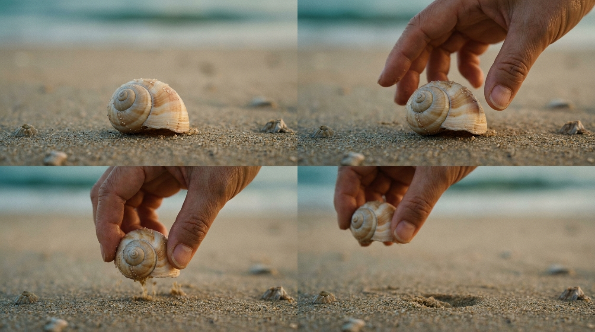

개막작
Poster
To Be Provided
To Be Provided
수라
Sura: A Love Song
감독 황윤

'갯것'은 갯가에서 살아가는 모든 것 — 보말과 깅이, 해녀와 갯바위, 조수웅덩이의 작은 어류와 사라져가는 산호까지 — 을 가리키는 제주의 옛말입니다. 제3회 갯것이 영화제는 해양보호구역인 성산읍 오조리를 무대로, 바다의 이야기를 영화로 듣고 갯벌의 생명을 직접 만나는 자리입니다.
국내외 해양 다큐멘터리 6편을 제주 곳곳의 상영관에서 만나고, 영화가 끝난 뒤에는 갯벌로 나가 직접 보고 만지는 6개의 생태 프로그램에 참여합니다. 깅이와 바당의 임형묵 감독, 87년 경력 해녀 현순직 할머니, 새만금 7년의 황윤 감독 — 영화가 들려준 바다의 이야기는 오조리·하도·이호·삼양·예례동의 갯벌에서 손끝으로 이어집니다.
"어차피 매립될 곳, 어차피 죽을 생명들을 왜 보호하느냐는 물음에
한 활동가는 끝내 카메라를 내려놓지 않았다."
영화제는 만 65세 이상 시니어 관객과 가족 단위 방문객의 접근성을 최우선으로 설계되었습니다. 큰 글자, 평이한 동선, 휴식 공간이 있는 상영관, 그리고 영화와 직접 연결된 갯벌 체험까지 — 영화관에서 바다까지 한 호흡으로 이어집니다.
새만금에서 제주 삼달리까지, 강원도 해안선에서 동남아시아 산호초 삼각지대까지. 6편의 다큐멘터리는 우리 바다와 갯벌의 지금을 기록합니다.
87년 경력의 96세 해녀 현순직이 가장 그리워하는 곳은 전복과 소라가 넘쳐나고 붉은 물꽃이 만개했던 들물여의 비밀 곳간입니다. 반면 서울에서 고향 제주로 돌아와 막내 해녀가 된 채지애는 삼달리 해녀라면 누구나 한번쯤 꿈꿔봤다는 그 곳을 알고 싶습니다. 상군 해녀와 막내 해녀, 한 세대를 넘는 두 사람은 결국 함께 물꽃을 찾아 나서지만, 6년에 걸쳐 기록된 카메라는 사라져 가는 제주 바다의 현실을 마주하게 됩니다. 현 할머니가 말하던 '물꽃'의 정체는 멸종위기 산호 밤수지맨드라미였습니다.
6편의 영화는 6개의 생태 프로그램과 짝을 이룹니다. 영화에서 본 보말과 산호와 해녀가, 다음날 갯벌에서 손에 잡히도록.
『조수웅덩이』 감독이 직접 안내하는 갯벌 생물 탐험. 조수웅덩이 안의 작은 우주를 만난다.
아이들이 직접 손에 잡는 갯벌 친구들. 김상길 강사가 들려주는 보목 앞바다의 생태 이야기.
초보자도 안전 장비를 갖추고 바닷속을 직접 체험. 다이빙 강사와 함께 이호 앞바다로.
현역 하도리 해녀와 함께 바당으로. 물질의 호흡과 갯바위의 보물을 한 자리에서.
제주 바다의 야생 남방큰돌고래 탐사. 동물에게 부담을 주지 않는 거리에서 관찰만.
투명한 카약 바닥 너머로 보이는 하도 앞바다. 위에서 내려다보는 갯것들의 일상.
개막작 『수라』가 첫 파도를 일으키고, 폐막작 『코랄 트라이앵글』이 마지막 물결을 만듭니다. 그 사이 6개 권역에서 영화와 생태 프로그램이 동시에 진행됩니다.
이 데모 페이지는 갯것이 영화제 통합 홈페이지의 골조와 톤을 미리 보여드리는 시안입니다.
본 제작에 들어가려면 아래 자료가 필요합니다. 우선순위에 따라 분류해 두었습니다.
🔴 긴급은 사실관계 정정으로, 본 제작 진입 전 반드시 확정되어야 합니다. 🟡 정정 필요는 의뢰자 미팅 자료와 공식 정보 간 불일치가 있어 한 번의 확인이 필요한 항목입니다. 🔵 미확정은 의뢰자가 추후 보유 자료를 보내주시면 채워질 항목입니다.
제작자에게 직접 전달해 주시거나, 위 항목별 답변을 한 메시지로 정리해 보내주셔도 좋습니다.